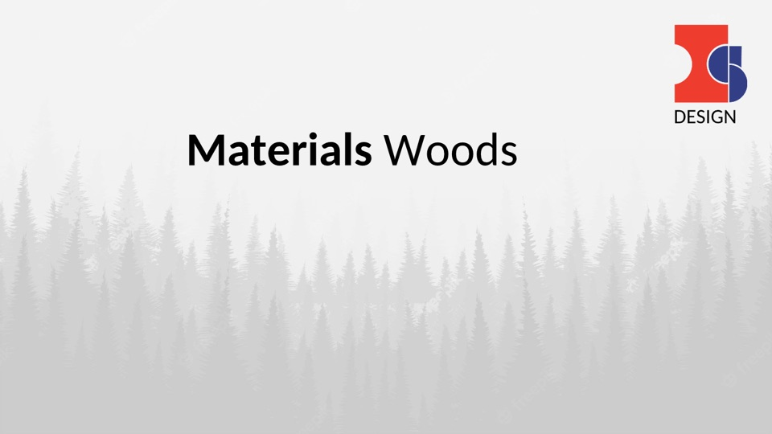

On 2026-10-23 I installed every ArtCraft "Crafting App" on this Mac, then drove all thirteen from the terminal instead of the GUI. The apps are real and they are free. The installer is incomplete, the free-tier claims are fuzzy, and "AI cracked Adobe" is the wrong story — here is the version with receipts.
The tell is menu parity. PhotoCraft ships Photoshop's menus, shortcuts and even an "Adobe Camera Raw Filter" entry. If you only looked at the UI you would swear it was a repack. So I opened the installed binary and looked for Adobe's fingerprints.
| Test | What I looked for | Result |
|---|---|---|
| Binary | /Applications/PhotoCraft.app/Contents/MacOS/PhotoCraft | 181 MB, pure Rust, statically linked |
| Adobe libraries | .dylib / frameworks from Adobe | none |
| Photoshop plug-ins | .8bf, Plug-ins/ tree | none |
| Colour profiles | .icc / .icm | none |
| Copyright strings | "Adobe", "Copyright … Adobe" | zero headers |
| 83 "adobe" string hits | what are they? | 8BIM, xmpmeta, ns.adobe.com/photoshop/1.0, "Adobe RGB (1998) compatible" — file-format namespaces, not code |
| Licence | repo LICENSE | MIT OR Apache-2.0 |
| Contribution rule | what contributors must not do | no copying code, shaders, icons or ICC profiles from proprietary software |
A PSD reader has to speak those namespace strings — that is the format. There is no Adobe code in there to patch. What exists is a from-scratch implementation that reads and writes the same files.
This is where the rumour comes from, and it is not a misunderstanding — it is an under-statement.
The repositories ship an AGENTS.md (18.7 KB, literally "a guide for AI agents and
contributors") plus an in-tree .claude/rules/ directory. The commit log behaves like an
agent works: roughly 100 commits in under 24 hours across about ten contributors, in thirteen
separate repositories, each one chasing 1:1 menu and shortcut parity with a commercial app.
People used AI agents to reimplement Photoshop-like behaviour from the outside, in Rust, and then gave it away. Nobody cracked anything. The software is genuinely free; the AI models are a separate, paid matter (see §06).
Stars are from the GitHub API on the same day. "CLI" is the number of commands the app's own
commands listing exposes — apps format that listing differently, so the count is entries,
not lines. The receipt column is deliberate: only rows with a real receipt claim a feature.
Everywhere else it says "CLI responds", because that is all I verified.
| App | Replaces | Stars | CLI | Size | What I actually verified |
|---|---|---|---|---|---|
| PhotoCraft | Photoshop | 71,183 | 924 | 141.5 MB | Wrote a valid .psd (file: "Adobe Photoshop Image, 800×600, RGB") and read it back |
| PdfCraft | Acrobat | 17,171 | 171 | 125.7 MB | A1 poster → 1191×842 PNG in 12 ms; text extract; found a faux redaction (§05) |
| FilmCraft | Premiere Pro | 15,704 | 701 | 127.1 MB | timeline unverified |
| WordCraft | Word | 15,500 | 633 | 159.2 MB | 6-page CJK .docx → PDF in 0.21 s; text extract |
| LightCraft | Lightroom | 14,295 | 371 | 232.9 MB | Imported an image, applied develop.set exposure=0.7 headlessly |
| VectorCraft | Illustrator | 10,409 | 792 | 206.2 MB | 60×40 mm stroke artboard; --outline-text → real <path>s; PNG export |
| EffectCraft | After Effects | 7,684 | 731 | 152.4 MB | compositing unverified |
| CADCraft | AutoCAD | 6,420 | 431 | 104.3 MB | bracket.dxf → SVG with 46 entities, clean polylines; → PDF |
| GridCraft | Excel | 6,231 | 341 | 28.7 MB | Wrote =SUM(B2:B3) → 6.5; check re-evaluated 25/25 formula cells with zero mismatch and zero round-trip drift |
| DesignCraft | InDesign | 4,657 | 521 | 151.0 MB | layout unverified |
| DeckCraft | PowerPoint | 4,117 | 321 | 148.5 MB | Real .pptx slide → PNG in 0.34 s (the render below) |
| SoundCraft | Pro Tools | 3,562 | 480 | 18.3 MB | audio unverified |
| FigCraft | Figma | 3,126 | 569 | 164.8 MB | prototyping unverified |

Woods Knowledge.pptx, slide 0 → 1440×810 PNG, 0.34 s, no PowerPoint, no LibreOffice.
Every one of these apps exposes its entire command registry to a headless CLI, a JSON control
channel and a stdio MCP server — which makes them unusually agent-friendly. But the official launcher
installs only the GUIs. There is no <app>-cli on your PATH afterwards,
and nothing in the UI points at one. The CLI is a separate release asset per app:
https://github.com/storytold/<app>/releases/download/v<ver>/<app>-cli-<ver>-macos-universal.zip
Thirteen apps × ~130 MB of CLI assets is not a thing anyone wants to assemble by hand, so I wrote the
installer I wanted: resumable downloads (curl -C -), quarantine stripping, symlinks into
~/.local/bin, safe to re-run. It is in the download pack below, with a verifier that prints
the table I used for §03.
Real files, real commands, no invented numbers. Everything here was run on 2026-10-23 on macOS 26.6 / arm64.
| # | Task | Command | Result |
|---|---|---|---|
| 1 | Poster page to image | pdfcraft-cli render poster.pdf --page 1 --dpi 72 --out p1.png | 1191×842 px in 12 ms |
| 2 | Faux-redaction hunt | pdfcraft-cli audit fake-redacted.pdf | exit 1 · recovered "Complaint reference: HK-2026-77341" from under a black box |
| 3 | Spreadsheet that computes | gridcraft-cli run --cmd 'cell.set={"cell":"B4","input":"=SUM(B2:B3)"}' --out sheet.xlsx | Total 6.5 · check: 25/25 formula cells matched, 0 round-trip drift |
| 4 | Word → PDF (Chinese) | wordcraft-cli convert 百度扩容.docx doc.pdf | 6 pages, 0.21 s, CJK glyphs intact |
| 5 | PPTX slide → PNG | deckcraft-cli render deck.pptx --slide 0 slide-0.png | 1440×810, 0.34 s |
| 6 | CAD → laser-ready vector | cadcraft-cli convert bracket.dxf bracket.svg | 46 entities, clean polylines |
| 7 | Text to outlines for LightBurn | vectorcraft-cli convert art.svg out.svg --outline-text | glyphs became <path> elements; 60×40 mm artboard |
A PDF "redaction" made by drawing a black rectangle leaves the text underneath, in the file, forever. This is the mistake that leaked real case files. I built a two-line PDF with a name under a black box and PdfCraft pulled the string back out and exited non-zero — so a script can refuse to publish a document that only looks redacted.
$ pdfcraft-cli audit fake-redacted.pdf
{"count":1,"findings":[{"covered_text":"Complaint reference: HK-2026-77341",
"kind":"covered-text","page":1}]}
pdfcraft-cli: audit: 1 faux redaction(s) found # exit 1
| Layer | Cost | Why it matters |
|---|---|---|
| The 13 apps | Free · MIT / Apache-2.0 | No account, no licence server, no subscription — the binaries run offline |
| ArtCraft desktop AI studio | Your own Midjourney sub or fal API key | "Free app" ≠ free GPU time; the models are metered |
| ArtCraft web studio | Account credits | Different product, different economics — this is not a free tier I could verify |
The GUIs come from the official launcher. The CLI layer is what this pack adds: the installer, a verifier, a machine-readable manifest of everything measured above, and a short list of the only download links worth using.
| In the ZIP | What it does |
|---|---|
| craft-cli-install.sh | Installs all 13 CLIs to ~/.local/bin; resumable, re-runnable, takes 4 base64-free arguments to install a subset |
| craft-cli-verify.sh | Prints version / command count / functional check per app; exit code = failures |
| MANIFEST.json | 13 apps with repo, stars, CLI version, command count, disk size, what was verified, alpha status |
| OFFICIAL-LINKS.md | Project links, per-app repos, the CLI asset URL pattern, what "free" covers |
| README.md | The measured table, the three warnings, the highest-value commands |
It is alpha. PhotoCraft, PdfCraft and FigCraft still label themselves "early alpha"; the other ten say "in development". Keep originals, export to new filenames, never let one of these be the only copy of anything.
PdfCraft's OCR is Latin-only and worse than macOS Vision. It needs PDFCRAFT_MODELS=/Applications/PdfCraft.app/Contents/Resources/models to work at all, and --language zh is rejected outright. Chinese scans still go through Vision.
Command names are not Photoshop's. image.resizeImage does not exist — query <app>-cli commands instead of guessing. Argument styles differ too (--out x.png on PdfCraft, positional output on DeckCraft).
The website's own download button is broken on a Mac: getartcraft.com/apps serves a Linux .flatpak. Use the launcher release page. And getartcraft.com/app is a 404 — the web studio lives at app.getartcraft.com.
| Claim | How it was checked | Status |
|---|---|---|
| 13 apps exist and install | 14 bundles in /Applications, 13 CLIs answering | verified |
| Not Adobe code | strings + filesystem audit of the 181 MB PhotoCraft binary | verified |
| Free & open source | repo licences MIT / Apache-2.0 | verified |
| AI-assisted authorship | AGENTS.md, .claude/rules/, commit cadence | verified |
| 6,986 CLI commands | craft-cli-verify.sh on all 13 binaries | verified |
| Pack integrity | sha256 of the ZIP served by isaac1804.com = the local build | verified |
| Free web-studio tier | login + credits flow | not verified |
| Film / Effect / Design / Sound / Fig features | — | not verified |
pdftoppm + headless Chromium for page rasterising — 12 ms, no browser, plus an audit that catches fake redactions.check is a real oracle, which openpyxl cannot do at all.